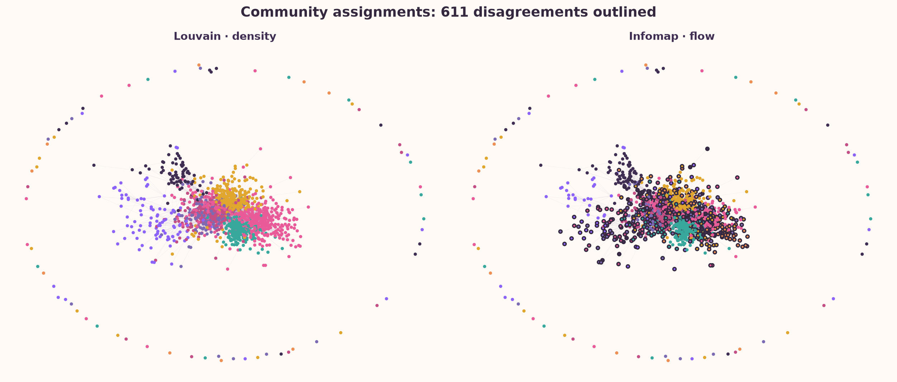
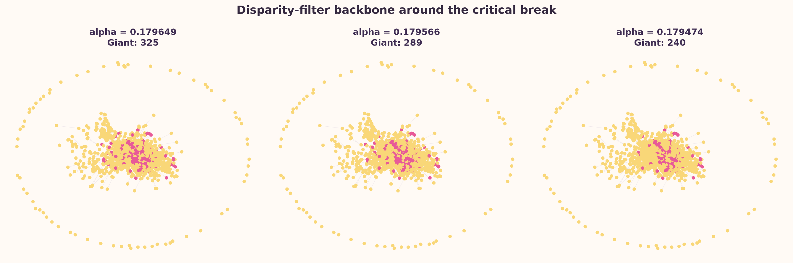
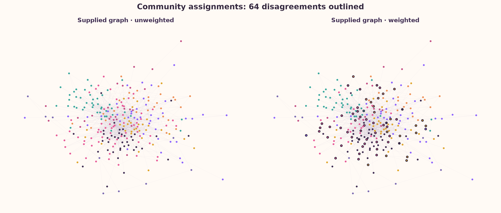

Communities & backbones
Find clusters and the links that hold a network together.
The primary data is a 1,444-node philosopher hyperlink network. We compare two community ideas, locate Aristotle among overlapping k-cliques, and filter links down to statistically concentrated ties. The supplied weighted TSV is also analyzed transparently as its own 303-node Marvel snapshot because its node universe does not match the philosopher files.
Louvain vs Infomap
Louvain searches for partitions with high modularity: more within-community edges than a degree-based null expectation. Infomap asks a different question. It compresses the paths of a random walker, looking for groups where information tends to circulate before crossing a boundary.
Those objectives can disagree when a node is a bridge, when communities have different sizes, or when modularity's resolution limit merges a small group into a larger one. The NMI below compares the assignments without pretending that either method is a historical truth.

The calculated NMI compares the two partitions while ignoring arbitrary community-number labels.
Use the interactive view above to inspect individual assignments.
Best for dense schools: it rewards more within-group links than a degree-based null model expects.
Best for intellectual transmission: it follows where a random walker can circulate before crossing a boundary.
Infomap is the better first history of transmission, while Louvain is the sharper map of dense traditions. NMI = —, so the broad structure is shared but bridge figures remain genuinely ambiguous.
Exact disagreement list
Which tradition is Aristotle really in?
Aristotle is present in the philosopher node file. We use 4-clique communities to test whether his direct neighborhood is held inside one dense tradition or touches several overlapping groups.
The graph gives Aristotle — undirected neighbors and links his neighborhood to — detected community groups. That multi-group neighborhood is evidence of a bridge position, not strict membership in only one tradition.
When does the backbone break?
A backbone keeps edges whose weight is unusually concentrated relative to the degree and total strength of their endpoints. Here one-way philosopher links weigh 1 and reciprocal pairs weigh 2. We evaluate every observed disparity p-value and show three thresholds around the largest giant-component drop.

The largest measured break occurs at the calculated alpha threshold, and the philosopher most associated with the newly removed edges is loading…. This is a graph statement about connectivity after filtering, not a claim about narrative importance.
Does weight change the story?
The supplied week4_edges_weighted.tsv is the 303-node Week 1 Marvel snapshot, not the philosopher graph. To avoid mixing node universes, this section compares that file's weighted and unweighted Louvain partitions on their own data.

The weighted and unweighted partitions have NMI —, with — Marvel nodes changing assignment. Since this is a separate supplied snapshot, the result is a test of hyperlink weighting, not evidence about philosopher traditions.
Exact list of moved Marvel nodes
Takeaway
Community detection is a lens, not a verdict. Louvain and Infomap expose overlapping but non-identical structure; the backbone analysis identifies a sharp connectivity change around the calculated alpha break; and reciprocal-link weight changes many assignments. The honest conclusion is that this network has real clusters and meaningful boundary sensitivity, so interpretation should preserve both the stable cores and the ambiguous bridges.